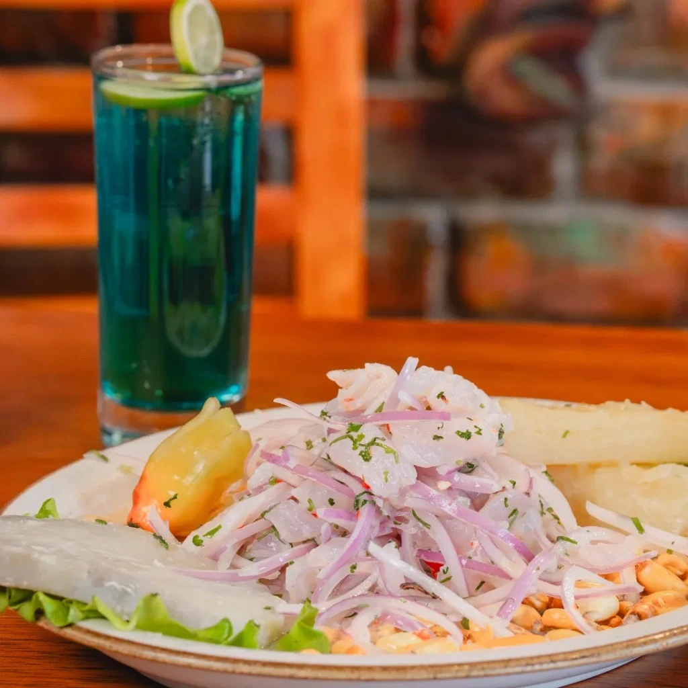
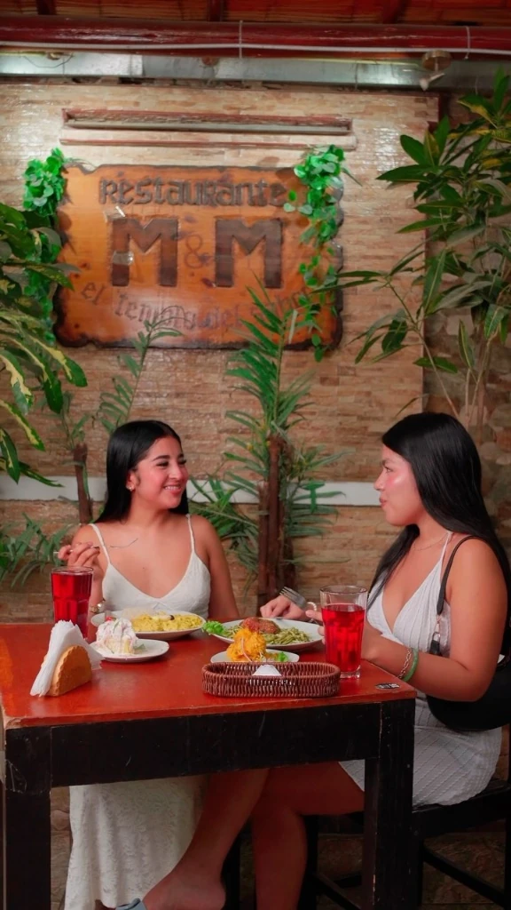

Frescura Marina
Cortes precisos de pescado y mariscos envueltos en leche de tigre limpia con ají limo sutil.
En Restaurante Cevichería M&M celebramos la cocina peruana con pesca y mariscos frescos en cortes precisos, recetas criollas tradicionales y pizzas artesanales recién horneadas en el corazón de Sullana.

Pesca fresca marinada al instante y acompañamientos tradicionales del norte.

Conocido por sus comensales como «El Templo del Sabor», Restaurante Cevichería M&M reúne en un mismo espacio la frescura de la cocina marina peruana, la contundencia de los platos criollos y opciones artesanales para compartir.
Ubicados estratégicamente en Av. Champagnat A-10, frente al Instituto Senati en Sullana, brindamos tanto atención en nuestro salón acogedor como servicio de delivery directo para acompañar tus almuerzos familiares, reuniones entre amigos y jornadas de estudio o trabajo.
Cortes precisos de pescado y mariscos envueltos en leche de tigre limpia con ají limo sutil.
Clásicos de la mesa peruana preparados al momento con guarniciones tradicionales.
Desde ceviches y fondos criollos hasta pizzas artesanales, piqueos y bebidas refrescantes.
Transparencia comercial: Todos los platos mostrados provienen de registros fotográficos reales del restaurante. Para conocer precios vigentes y disponibilidad del día, contáctanos directamente al 983 985 387.
Ambiente cálido con texturas naturales, atención cercana y facilidades tanto para visitarnos en salón como para recibir tu pedido en casa.
Nuestro salón combina muros en tonos tierra y piedra decorativa, mobiliario de madera en tonos rojizos y detalles de vegetación natural que crean una atmósfera relajada y acogedora en Sullana.
¿Prefieres disfrutar nuestra gastronomía en casa o en la oficina? Contamos con atención directa vía WhatsApp para coordinar tus pedidos de manera rápida y personalizada.
Fotografías reales de nuestros platos, bebidas y experiencias en salón. Haz clic en cualquier imagen para verla en pantalla completa.
Estamos frente al Instituto Senati en la Av. Champagnat. Escríbenos directamente para pedidos por delivery o consultas sobre nuestra carta.
Av. Champagnat A-10 (Frente al Instituto Senati)
Sullana, Piura, Perú
Abrir ruta en Google Maps →Horario por confirmar
Para evitar información inexacta, confirma nuestra atención del día directamente por WhatsApp al 983 985 387.
Referencia verificada: Av. Champagnat A-10, frente al Instituto Senati — Sullana, Piura.